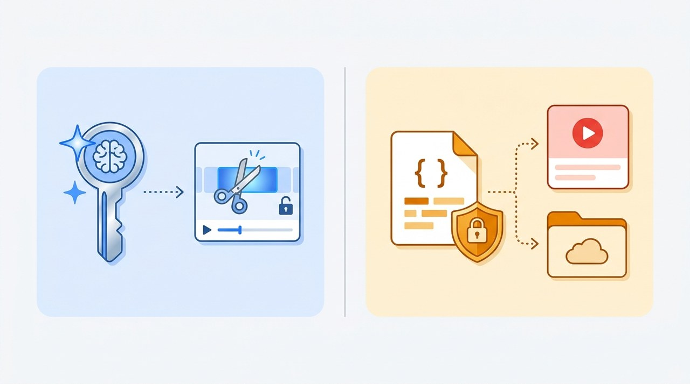
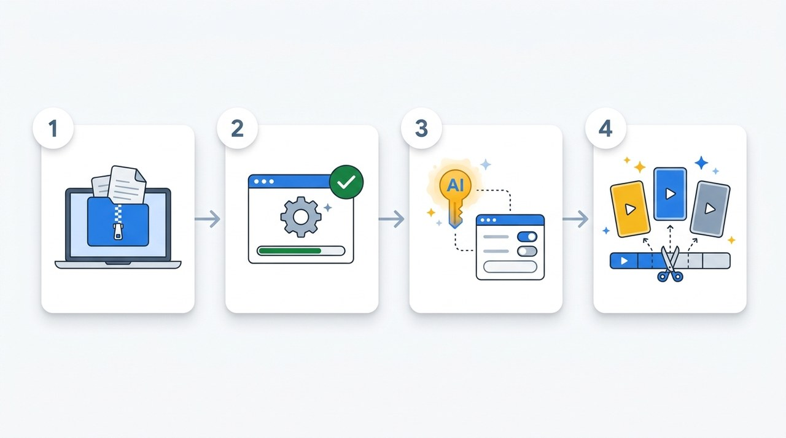
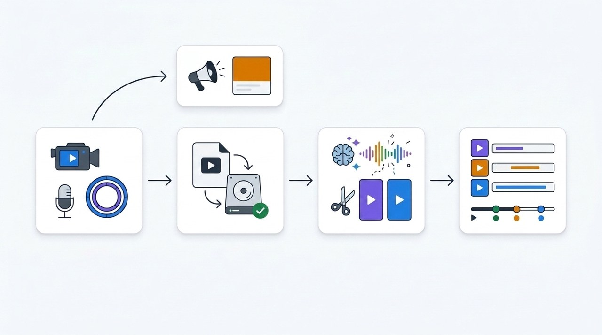

アプリの導入から「Gemini APIキー」や各種外部連携の設定まで、パソコンが苦手な方にもわかるように図解＆チェックリストつきで説明します。
切り抜き作成だけなら約5分・無料・クレジットカード不要で始められます。
使いたい機能にチェックを入れると、あなたが読むべきパートだけが分かります。基本の切り抜きだけなら Part 0 と Part 1 だけ で完了です！

AIza… で始まる文字列.json 形式のファイル
ダウンロードした ZIP ファイルを右クリック → 「すべて展開」 でフォルダに取り出します。
C:\clip-extractor のように、日本語や空白が少ない短いフォルダに置くとトラブルが起きにくくなります（OneDrive 同期フォルダの中は避けるのがおすすめです）。setup.bat をダブルクリックするsetup.bat をダブルクリックしますN（スキップ） で OK です（10秒待つと自動でスキップされます）setup.bat の最後で「今すぐ起動しますか？」に Y を押すか、デスクトップに作られた 「Clip Extractor」 アイコンをダブルクリックします。数秒待つと自動でブラウザ画面が開きます。
AI（Gemini）に「動画のどこが面白いか」を分析してもらうための鍵です。Google アカウント（個人の Gmail）があれば約2分でもらえます。
ふだん使っている Google アカウントでログインし、初回のみ利用規約に同意します。
AIza… で始まる文字列が出ていたら、そのままコピーしてステップ 3 へ進めます。clip-extractor などで OK）AIza から始まる文字列の横にある コピーボタン（📋） を押してコピー| 質問 | 答え |
|---|---|
| お金はかかりますか？ | 無料枠があります。クレジットカードなしで始められます。有料枠に切り替えた場合のみモデルとトークン数に応じた従量課金になります。 |
| 無料で1日に何本使えますか？ | 通常は1動画につき1リクエストです。まず1日数本を目安にしてください。実際の上限は AI Studio の Rate limit 画面 で確認できます。 |
| どのモデルを選べばいい？ | 1日1〜数本なら既定の gemini-4-hydrogen（最新世代・無料枠あり）がおすすめです。無料枠上限（429）に達したときは、自動で下位の無料枠モデル（gemini-3.8-flash → gemini-3.5-flash-lite）へ切り替えて再試行します。※有料専用モデルや OpenAI を選ぶと画面に課金警告が出ます。 |
| 字幕の内容は安全ですか？ | 無料枠では送信内容と生成結果が Google の製品改善に使われ、人が確認する場合があります。個人情報・機密情報は送信しないでください。 |
clip-extractor と入力 → 「作成」YouTube Data API v3 を貼り付けて検索Google Drive API も有効にする「使ってみる」（Get started）を押し、4項目を入力して作成します：
| 画面 | 入力すること |
|---|---|
| 1. アプリ情報 | アプリ名：clip-extractor／サポートメール：自分の Gmail → 次へ |
| 2. 対象 | 「外部」を選ぶ → 次へ |
| 3. 連絡先情報 | 自分のメールアドレスを入力 → 次へ |
| 4. 完了 | ポリシー同意にチェック → 「作成」 |
clip-extractor desktop → 「作成」client_secret_〜.json をドロップOBS で配信が終わった瞬間に、録画から自動で切り抜き・タイムスタンプ作成まで走らせる設定です。

4455）とパスワードをコピーlocalhost）、Port（4455）、Password を入力API Key / API Key SecretAccess Token / Access Token SecretAIza で始まります）。原因の第1位：テストユーザーの登録忘れ（Part 2 のステップ 4）です。
Part 2 のステップ 5 で「ウェブ アプリケーション」を選んでしまったのが原因です。クライアント一覧で削除し、「デスクトップ アプリ」で作り直してください。
テストモードではトークンが 7日で失効 します。「認証する」を押し直すか、「対象」ページで「アプリを公開」→ 本番モードにすると長期維持できます（個人利用なら通常審査不要）。
1分あたりまたは1日あたりの無料枠上限です。AI Studio の Rate limit 画面でリセット時刻を確認し、少し待ってから再実行してください（アプリが壊れたわけではありません）。
X Developer Console でアプリ権限が Read and write になっているか確認し、変更した場合は Access Token / Access Token Secret を再生成して4項目を保存し直してください。
| ことば | ざっくりした意味 |
|---|---|
| API（エーピーアイ） | アプリ同士が会話するための「窓口」。Clip Extractor はこの窓口を通じて Google や X にお願いごとをします。 |
| APIキー | 窓口で見せる「会員証」。AIza… のような長い文字列で、これを見せると Google が本人と認識します。 |
| OAuth（オーオース） | パスワードを直接渡さずに「このアプリに YouTube 操作を許可する」と伝える安全な仕組み。 |
| credentials.json | YouTube / Drive 連携に使う「アプリの身分証明ファイル」（Part 2 でダウンロード）。 |
| WebSocket | OBS と Clip Extractor がリアルタイムで「配信が始まった／終わった」を伝え合うための通信機能。 |
| クォータ | 1日に使える回数の上限。YouTube の概要欄更新は無料枠で1日約200本分使えます。 |